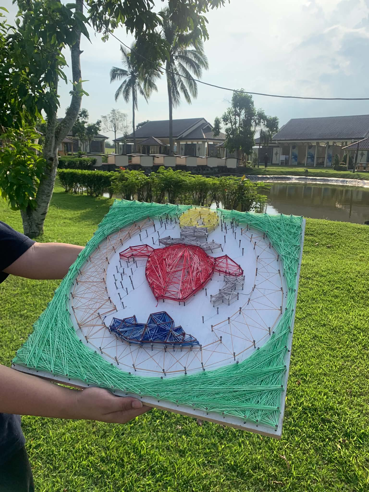

String Art

Overview
This project showcases how string art can be used to create visually appealing designs by combining geometric patterns with creativity. It encourages artistic expression while developing patience, precision, and attention to detail. My role was to design the pattern, prepare the materials, and carefully arrange the strings to complete the artwork. The final outcome was a finished string art piece that successfully demonstrated both creativity and craftsmanship.
What I learned
Through this project, I improved my creativity, hand-eye coordination, and problem-solving skills. I also learned how to plan designs, measure accurately, and use tools such as nails, string, a wooden board, a hammer, and a ruler. Working on the project also strengthened my patience and attention to detail.
View live site / repo